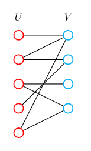
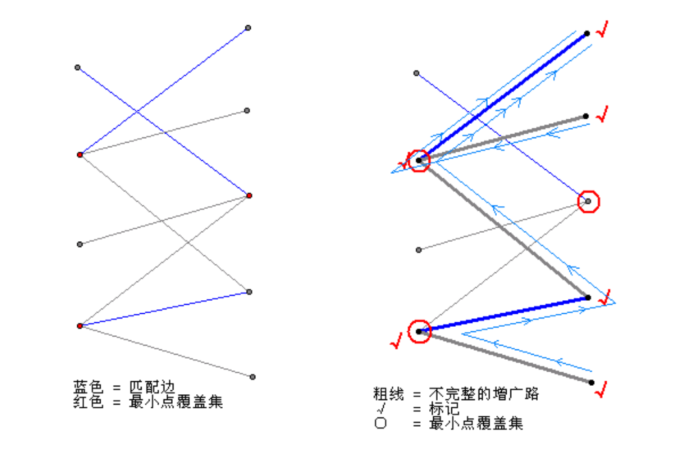

二分图
二分匹配¶
二分图¶
二分图：又称二部图。简单来说，如果图中点可以被分为两组，并且使得所有边都跨越组的边界，则这就是一个二分图。准确地说：把一个图的顶点划分为两个不相交集 U 和 V ，使得每一条边都分别连接U、V中的顶点。如果存在这样的划分，则此图为一个二分图。U、V可分别称左部和右部。
二分图的一个等价定义是：不含有「含奇数条边的环」的图。

例题¶
有n个人，其中有m对关系(x,y)表示x和y互相仇恨，x和y不能出现在同一个场合。问，能不能将这n个人，分成两组且每组之间任意两个人都不仇恨？
染色法判定：
-
尝试用黑白两种颜色标记图上的节点，当一个节点被标记后，他的所有相邻的节点应该被标记为与它相反的颜色。如果标记过程中产生了冲突，说明图中存在奇环。
-
dfs遍历，复杂度 O(n+m)
1 2 3 4 5 6 7 8 9 10 11 12 | |
匹配¶
-
匹配：在图论中，一个「匹配」（matching）是一个边的集合，其中任意两条边都没有公共顶点。可以将图中边分为匹配边、非匹配边。点分为匹配点，非匹配点
-
最大匹配：一个图所有匹配中，所含匹配边数最多的匹配，称为这个图的最大匹配。
-
完美匹配：给定一张二分图，其左右节点数相同，均为N个节点。如果最大匹配包含N条边，则称该二分图包含完美匹配。
-
交替路：交错路，从一个未匹配点出发，依次经过非匹配边、匹配边、非匹配边…形成的路径叫交替路。
-
增广路：从一个未匹配点出发，走交替路，如果途径另一个未匹配点（出发的点不算），则这条交替路称为增广路（agumenting path）。
思考：
有n个人，若干男生，若干女生，其中男女之间有m对关系(x,y)，表示x、y之间有好感，问你最多能挑多少对人，使得每一对都是有好感的（每个人只能被挑一次）
how?¶
-
匈牙利算法：O(nm)
-
二分图最大匹配可以转换成网络流模型。
说明：
将源点连上左边所有点，右边所有点连上汇点，容量皆为1。原来的每条边从左往右连边，容量也皆为1，最大流即最大匹配。
使用 Dinic 算法 求该网络的最大流，复杂度O(\sqrt{n}m)
匈牙利算法概念¶
回顾两个概念：
-
交替路：从一个未匹配点出发，依次经过非匹配边、匹配边、非匹配边…形成的路径叫交替路。
-
增广路：从一个未匹配点出发，走交替路，如果途径另一个未匹配点（出发的点不算），则这条交替路称为增广路（agumenting path）。
性质：
增广路有一个重要特点：非匹配边比匹配边多一条。因此，研究增广路的意义是改进匹配。只要把增广路中的匹配边和非匹配边的身份交换即可。由于中间的匹配节点不存在其他相连的匹配边，所以这样做不会破坏匹配的性质。交换后，图中的匹配边数目比原来多了 1 条。
有如下定理：
二分图中的一组匹配S是最大匹配，当且仅当图中不存在S增广路
匈牙利算法¶
- 设S = \varnothing ，即所有边都是非匹配边
- 寻找增广路path，把路径上的所有边的匹配状态取反，得到一个更大的匹配S'。
- 重复第2步，直至图中不存在增广路。
关键在于如何找到增广路。匈牙利算法依次尝试给每一个左部节点x寻找一个匹配的右部节点y。右部点y能于左部点x，匹配需要满足如下两个条件：
- y本身就是非匹配点，此时(x,y)就是非匹配边，自己构成长度为$ 1 $的增广路。
- y已经和左部一节点x'匹配，但是从x'出发能找到另一个右部点y'与之匹配。
本质桑使用的还是dfs递归的从x出发寻找增广路，回溯时将路径上的匹配标记取反。
1 2 3 4 5 6 7 8 9 10 11 12 13 14 15 16 | |
1 2 3 4 5 6 7 8 9 | |
进阶¶
感兴趣自己可以了解一下：
- 多重匹配
- 带权匹配
- 最优匹配（KM算法）
覆盖和独立集¶
概念：
- 最小边覆盖：最少的边覆盖所有点
- 最小点覆盖：最少的点覆盖所有边
性质：
- 二分图 的最大匹配 = 最小点覆盖 --《Konig定理》
- 对于不存在孤点的任意图，最大匹配+最小边覆盖=顶点数

概念：
- 最大团&最大独立集：最大的点集，任意两点之间都有边/都没边
性质：
-
无向图G，的最大团等于其补图G'的最大独立集
-
任意图 中，最大独立集+最小点覆盖=顶点数
- 二分图 中，最大独立集 = 顶点数 - 最大匹配数
- 二分图 中，最大独立集 = 最小边覆盖
图论的精髓 ： 建图¶
因为疫情，大家都不想在电影院离得太近，每个人x曼哈顿距离内都不想有其他人，问怎么安排使得做的人做多？
例题1
例题4
给一个数k，问他的正整数倍数中，（十进制下）每一位的和最小是多少,2\leq k \leq 10^{5}
- 从1开始 ， 建立一个数x到x+1和x*10分别为1和0的边，最后找到最快到达的k的倍数，即答案最短路